Bottom stack + official Pi mark
所有终端图均由 Pi 0.83.0 在真实 PTY 中绘制；HTML 只负责切换与并排查看。
A · 连续层级 + 自适应标识（推荐）
Statusline 第二行之后立即进入 Fleetview；正常空间使用 8×4 官方形状，低高度切换成等价的 4×2 半块字符；标识使用当前 Pi 主题的 accent 色。完整标识下方固定保留一行呼吸空间。
这个方案
- 接缝
- 不留空、不画线
- 标识
- 8×4 ⇄ 4×2
- 颜色
- Pi 主题 accent
- 空间
- 最省，层级靠缩进表达
Fleetview 自带两格缩进，因此无需再用空行或横线强调边界。下面出现的紫色横线是 Pi 原生输入框边界，不是我们新增的分隔线。
Welcome
100×26 保留完整标识及其下方独立空行；42×18 自动压成 4×2。
{kind=link}
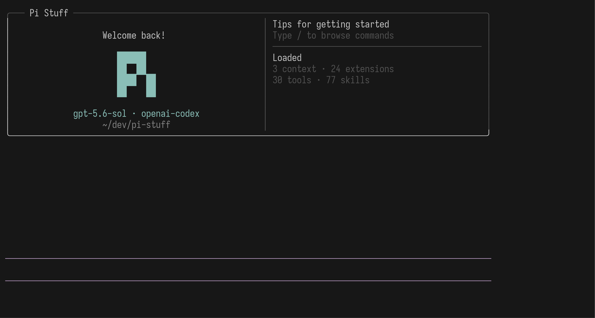
{kind=link}
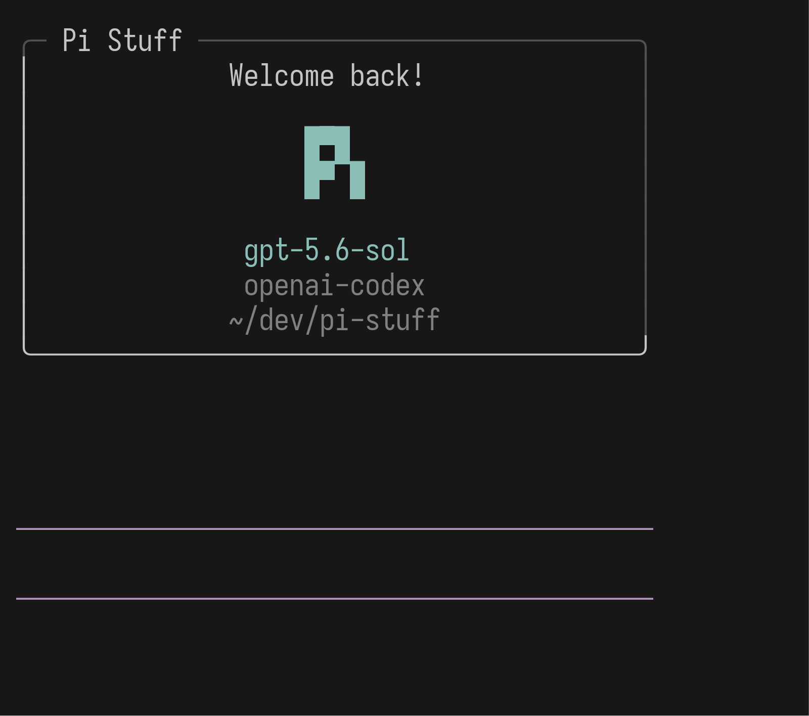
Statusline → Fleetview
100×24 与 64×18；信息直接连续，Fleetview 始终最后。
{kind=link}
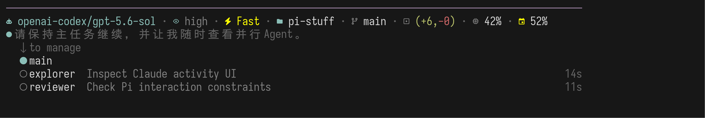
{kind=link}
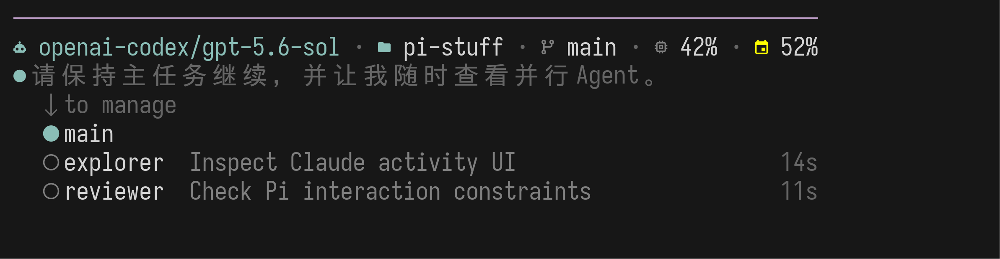
B · 留一行 + 固定完整标识
Statusline 与 Fleetview 之间保留一整行；官方形状始终使用 8×4，并采用普通正文色。更接近官网黑白标识，但窄终端更高、更松。
对照变量
- 接缝
- 一行空白
- 标识
- 始终 8×4
- 颜色
- 普通正文色
- 空间
- 额外占一行以上
在 42×18 中，完整标识仍能画出来，但会明显挤压 Welcome 下方空间；底部空行也会与 Claude Code 式紧凑层级拉开距离。
Welcome
正常与受限尺寸都保持完整、单色。
{kind=link}
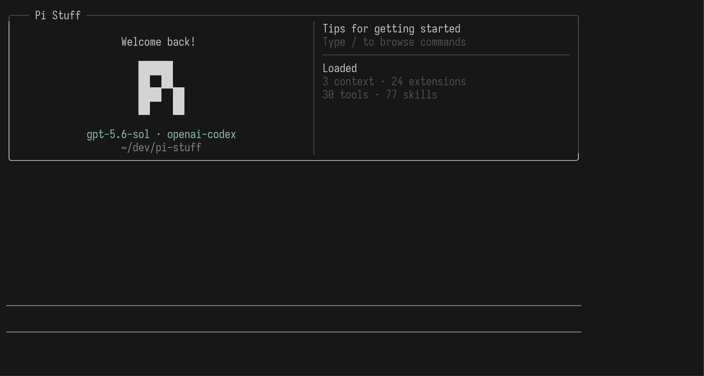
{kind=link}
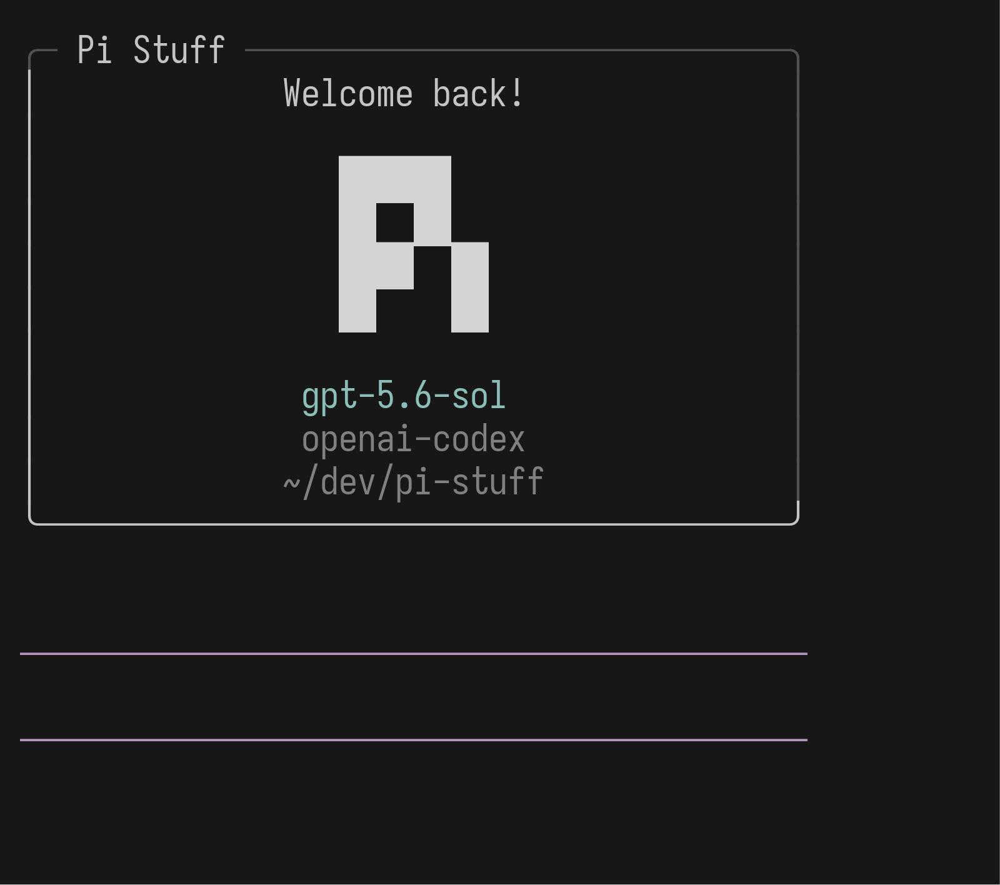
Statusline → Fleetview
中间多一行呼吸空间。
{kind=link}
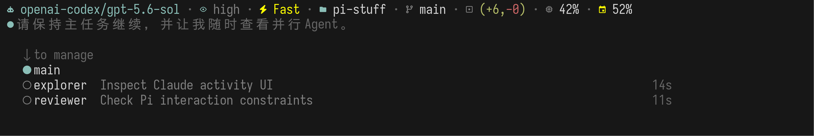
{kind=link}
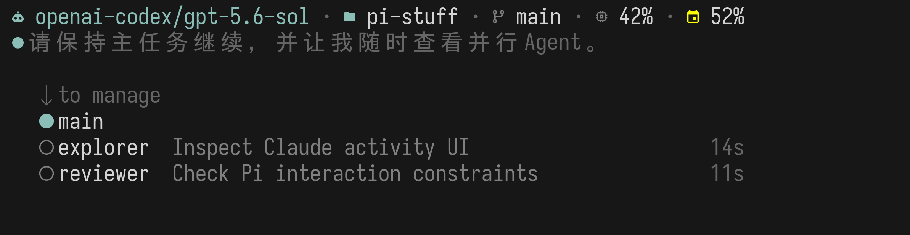
C · 明确分隔 + 固定紧凑标识
Statusline 与 Fleetview 之间画一条弱横线；官方形状始终压成 4×2，并使用主题 accent 色。分区最明确，但横线让底部更像多个面板拼接。
对照变量
- 接缝
- 一条弱横线
- 标识
- 始终 4×2
- 颜色
- Pi 主题 accent
- 空间
- 多占一行，标识最小
这条横线与输入框现有边界形成重复视觉结构；完整宽度下，4×2 标识也显得偏小。
Welcome
所有尺寸都使用紧凑形状。
{kind=link}
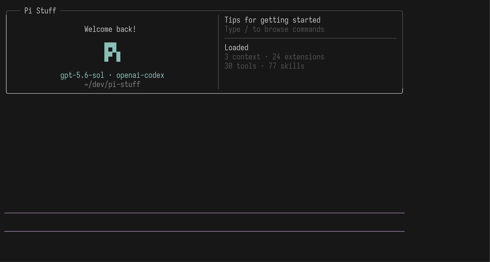

Statusline → Fleetview
中间增加一条完整弱横线。
{kind=link}
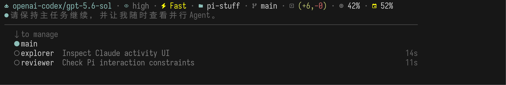
{kind=link}
Claude Code 2.1.220 · 真实 Statusline 位置
配置 kcchien/claude-code-statusline 后，真实 Claude Code 的顺序是：输入框下边线 → 自定义 Statusline 两行 → 内置 footer badges。三块之间均没有空白行，也没有额外分隔线。截图使用本地确定性 API 响应，只替代回答内容；Claude Code Host、Statusline 命令和所有布局均为真实运行结果。
{kind=link}
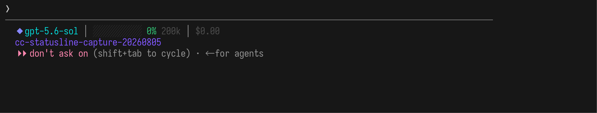
{kind=link}
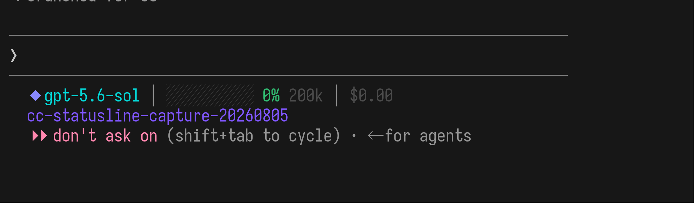